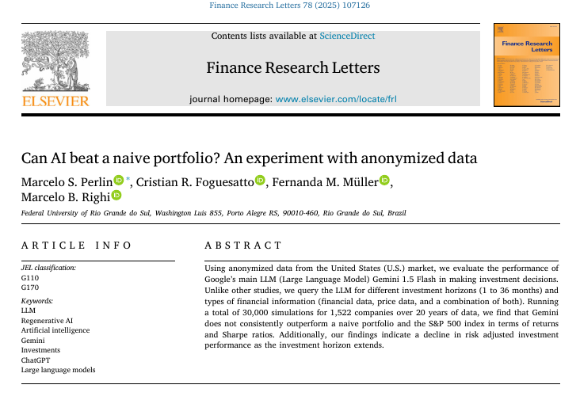
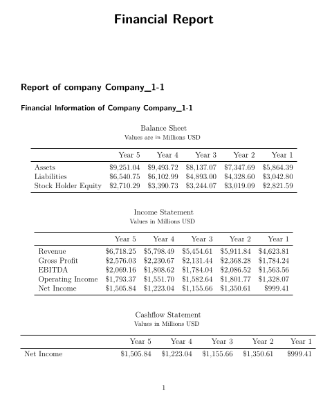
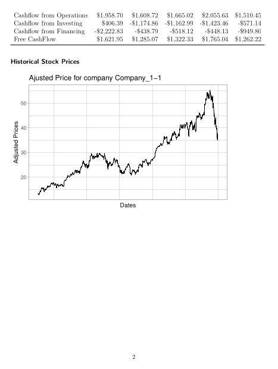
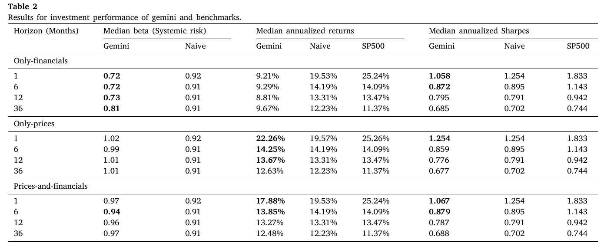
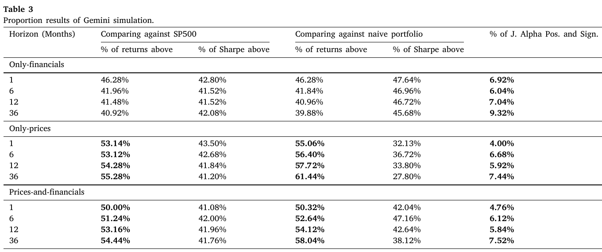

Finance Research Letters v. 78 2025
EA-UFRGS
2025-11-04

Paper published in FRL 2025 78
Large Language Models (LLMs) like Gemini and ChatGPT are transforming many fields, including finance.
A critical flaw in many existing studies is the use of non-anonymized data.
Can Google’s Gemini LLM consistently outperform simple benchmarks in a truly blind test using anonymized data?
Key Contributions:
Novel Blind Experiment: we omit any indication of stock ticker or time period of analyzed data
Heteregenous Inputs: We test across different data types (financials vs. prices) and time horizons (1 to 36 months).
Large Scale: We run 30,000 simulations using 20 years of data from 1,522 U.S. companies.
We use real financial statements and daily stock prices of U.S. companies from 2004 to 2024 (data from EODHD)
All stock prices are adjusted for dividends, splits, and any other corporate event
Based on the financial data, we follow an algorithm o build pdfs that are later analyzed by the LLM
A random date between 2004 and 2023 is selected using uniform probabilities;
Based on the previous date, we randomly select 5 stocks from a sample of companies that respect all the following rules:
With the 5 random stocks from previous step, we use Quarto to build a single pdf with past information for the 5 selected companies in the previous 5 years, with three versions of the file:
All numerical data (prices, revenue, income, etc.) are multiplied by a single random factor (e.g., 0.453). Company names are replaced for generic names (e.g., “Company_1-1”). All dates are removed.
We than feed the LLM with the built pdf and ask it how much to invest (exact query later)


System instructions: You are a financial analyst with expertise in analyzing the past performance of companies and picking winning stocks. In this task, you are analyzing past information about 5 publicly traded companies.
Prompt: Today, you have 10,000 USD to invest for the next N-MONTHS months. You have 6 choices, 5 companies traded in the financial exchange, or invest in the risk-free rate named RISK-FREE-ASSET, which is currently yielding RF-YIELD of return per year. Return the response as json, with 6 elements, with the following structure in each element: “company”, “investment”.
N-MONTHS: placeholder for the investing horizon in months.
RF-YIELD: The current future yield rate. We use the most recent yield rate of the 5-year U.S. Treasury yield (ticker FVX) available on a random date from the simulation.
Benchmarks:
Key Metrics:

Table 02 - Results for investment performance of gemini and benchmarks.

Table 03 - Proportion results of Gemini simulation
The overall success rate for Gemini was ~52%, indicating its performance is no better than a coin flip.
Performance on a risk-adjusted (Sharpe) basis was even worse, with the model consistently underperforming benchmarks.
Risk-adjusted performance declined for all strategies as the investment horizon extended.
No consistent outperformance when using annonymous data!
Evaluation of LLMs in Finance, with Felippe Affonso - which LLM are best for finance? - is price related to efficiency?
The use of AI in Financial Reports, with Aliki and Cristian - are companies using AI for writing their 10-Ks? - what is the profile of companies using AI?
Research Seminar @ Department of Statistics (UFRGS)